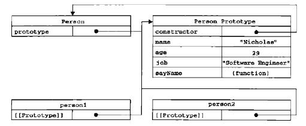

想把自己痛苦的小白学习过程总结一下，在分享的过程中，不要以为我有多伟大啊= =，其实写总结的过程，也是自己对知识的理解也有进一步的进阶w。（感觉写完博客对面向对象编程又有了新的认识）伟大的安德罗妮生前说过：“如果你教会一个6岁小孩编程，你才是真正 理解编程。”
那么，为了阅读这篇文章你可能需要懂得JavaScript最基础的语法知识，以及一些函数知识即可。
理解面向对象编程
首先，当你学习过面向对象编程时，别人一定会告诉你：“一切皆对象”。
我想对于野生编程小白来说，你的心里应该是这样的：
“一切皆对象到底是什么意思？”
我的理解：对象的意思是具体的每个人，程序中一些的代码片段可以变成一个具体的人。这就是我对一切皆对象的解释。那么，怎么样编写才能让一段代码创造出一个具体的人呢？这个过程就是面向对象程序设计的思路。
大家总说：封装、继承、多态
学习的时候，大家总说，面向对象编程特点封装、继承、多态。
如何理解这三个特点呢？总结的说：这三个特点是指通过面向对象程序设计创造的每个具体的个体的三个特点。我们将这三个特点穿插在全文讲解之中。
怎么面向对象编程呢？
对于一个编程萌新来说，坑爹地方在这里。JavaScript的面向对象编程与其他OOP语言不同，因为JS里没有类的概念（class），无法自定义类，什么是类？可以理解为抽象出来用来创建对象的构造器。没有class类来创建构造器，JS怎么做到面向对象编程呢？这里就需要提到JS的构造函数了。
在这之前先来总结一下，面向对象编程的逻辑。
1. 编写一个可以创建具体个例（术语叫实例对象）的构造器。
2. 调用这个构造器创建
3. 具体个例创建！
【等等！疑惑来了：为什么要面向对象编程？】
【回答：面向对象的编程思路可以让你编写的代码更具有结构化，伟大的安德罗妮生前说过：“具有结构化与可读性的代码，才是具有生命力的。”】
=========================重点部分=========================
【创建一个构造器：构造函数模式】
一种编写构造器的思路是通过JS特有的构造函数来编写：
function Person(){
this.name = "xiaoming";
this.tall = "170";
this.weight = "65";
this.sayHi = function(){
alert("Hello!My name is " + this.name);
}
}
var person1 = new Person(); //通过Person的构造器创造了一个具体的个体叫person1
console.log(person1.name);//xiaoming
console.log(person1.sayHi()); //Hello!My name is xiaoming
上述代码中，Person函数就是一个构造函数，其实创建方法与函数一样，或者其实你可以理解构造函数就是函数，只是内部结构有一些不同。
然后person1就是我们创建的一个具体的个体，即实例对象（下文都说实例对象了）。 大家注意new 这个关键词，是JS调用构造函数的特殊关键词。 这样我们可以看到person1 里面就有了name属性、tall属性、weight属性以及sayHi的方法。 我们就可以通过person1的实例对象来调用他们。
通过Person()构造函数，我们就可以利用一段代码，不停的创造出很多个实例对象。这一段代码通过Person()构造函数很好的被封装了起来，这就是构造函数的第一个特点封装。
【疑问：如果我想创造各种不一样的实例对象呢？】
【问答：那么就需要通过构造函数动态的创建不同的实例对象。】
如何动态创建不同的实例对象？
function Person(argname,argtall,argweight){
this.name = argname;
this.tall = argtall;
this.weight = argweight;
this.sayHi = function(){
alert("Hello!My name is " + this.name);
}
}
var person1 = new Person("xiaoming","170","65"); //创建一个person1
var person2 = new Person("xiaohong","160","60"); //创建一个person2
console.log(person1.name);//xiaoming
console.log(person2.name);//xiaohong
console.log(person1.sayHi()); //Hello!My name is xiaoming
console.log(person2.sayHi()); //Hello!My name is xiaohong
你看，通过向构造函数传入不同的参数，参数传入构造函数中的实例属性后，你就可以实现不一样的实例。所以，通过传入不同的参数，创建不同的实例对象，这就是面向对象编程的特点二：多态。
【小技巧贴士：为了提高可读性，一般我们给构造函数起名字时，习惯首字母大写，比如Person来表示这是一个构造函数，来区别于其他的普通函数，但是这不是语法必须的。】
怎么样是不是觉得面向对象编程还挺容易理解的？
【要点：理解构造函数模式怎么工作】
好了，我们来讲一下，刚才到底发生了什么。其实当我们通过new关键词调用Person构造函数时，实现了以下的逻辑：
1.创建了一个person1实例对象的作用域
2.然后构造函数内部的this指针指向了person实例对象的作用域，即this==person
3.然后会开始执行Person构造函数中的逐行代码
4.分别在person实例对象上创建属性与方法
这样就完成了整个person1实例对象的创建过程。我们封装了一个Person构造函数，可以用来动态的创建很多person1，person2的实例对象。
【然而：构造函数模式是有缺点的！】
是的，这么做的就是有问题的。最缺点在于：费，内，存！
原因在于当你创建一个新的实例对象（例如person1）时，构造函数就会被执行一遍，然而当创建100个实例对象时，构造函数就执行了100遍，然而里面的给实例对象赋属性、方法的操作都是一模一样的，这样会造成严重的内存浪费，以及代码的重复执行，非常不环保。（这里借用阮一峰老师的话）
【疑惑：那应该怎么解决？】
【问答：所以我们就要隆重推出JS面向对象编程的原型(prototype)模式！】
是的，原型模式就是用来解决当大量创建实例对象时，造成的代码重复执行的问题。让我们来看一个例子：
function Person(){
//不要疑惑，这里就是空的
}
Person.prototype.name = "xiaoming";
Person.prototype.tall = "170";
Person.prototype.weight = "65";
Person.prototype.sayHi = function(){
alert("Hello!My name is " + this.name);
}
var person1 = new Person();
console.log(person1.name);//xiaoming
console.log(person1.sayHi());//Hello!My name is xiaoming
这样就是原型模式，每个函数都会有一个prototype的（原型）属性，这个属性是一个指针，都会指向一个对象。简单的说，就是在构造函数的内部，还有一个属性可以调用另个一个对象上的东西，根据案例你可以发现，我们同样可以通过person1.name 取到"xiaoming"的值。
也许你会问，这和之前的构造函数模式有什么区别呢？区别在于当创建实例对象的时候，构造函数会给实例对象赋上一个指向本身原型属性(prototype)的指针，实例对象可以用__proto__属性来查看构造函数的原型属性。
好吧，这一段复杂了。需要上图例：
这个图是来自于《JavaScript高级程序设计第三版》P148的图例。可以发现person1的实例对象有一个[[Prototype]]指针指向了Person构造函数的原型属性指向的对象，而这个[[Prototype]]指针ES5规范下只能在chrome、Firefox、safari浏览器下支持，IE是不支持的。（感谢读者提醒）补充：原型属性所指向的对象中，又有一个constructor属性指向构造函数。
所以，从理论上讲，构造函数模式和原型模式的区别在于值传递与引用传递，那到底区别在哪里？
function Person(){
this.name = "xiaoming";
this.country = "china";
}
var person1 = new Person();
var person2 = new Person();
person1.country = "Japan";
console.log(person1.country); //Japan
console.log(person2.country); //china
你会发现，在构造函数模式里，我们通过改变person1的属性country能够改变这个属性的值。如果我们要将person1与person2的country属性都改成Japan，那我需要分别对person1与person2的country属性进行赋值。如果我有person100，person1000的时候呢？如果我们进行100次、1000次赋值操作是不是就很不合理吧？
然后我再来看原型模式：
function Person(){
//没错你没看错，原型模式里面这里不做操作
}
Person.prototype.name = "xiaoming";
Person.prototype.country = "china";
var person1 = new Person();
var person2 = new Person();
person1.__proto__.country = "Japan";
console.log(person1.country);//Japan
console.log(person2.country);//Japan 这里person2的值也改变了！
怎么样，你发现当你通过person1的__proto__属性指针来改变country属性的时候，person2的country也变了！因为这里是引用传递，person1与person2都同时指向了一个原型对象，所以当通过person1改变的时候，person2也是受到影响的。这样如果你要创建1000个person实例对象时，只需要修改其中一个实例对象中指向的原型对象，这样就会映射到所有1000个实例对象中，不再需要写1000个赋值操作。
这就是原型模式的最大优点。
另外，你会发现当如果要为构造函数添加许多属性或方法时，会显得十分麻烦。于是，我们可以这么做：
function Person(){
//没错你没看错，原型模式里面这里不做操作
}
Person.prototype = {
constructor:Person, //这里是重新将constructor属性指向Person构造函数
name:"xiaoming",
country:"china",
sayHi:function(){
alert("Hi!");
}
}
通过上述方法给Person.prototype上重新赋值一个对象时，就可以快读添加许多属性与方法。然而这里作者挖了一个小坑，因为上述方法这么做会将Person构造函数的原型对象重写，导致的结果就是prototype属性不再指向老的原型对象，而是指向新的原型对象。这里要十分注意。（参见《JavaScript高级程序设计第三版》P154-156）
我想这时，你的心里可能是“卧槽，太屌了！我终于会用构造函数了”，然而和当初天真的我一样，如果你足够细心就会发现好像哪里不对劲, 由于原型模式搭建的构造器，是引用传递，也就是说所有实例对象共用所有的原型属性与方法。当我想要创建不一样的实例对象时，原型模式的方法就行不通了。所以原型模式并不是最终合理的方法。
【接下来我们要推出压轴剧情：混合模式】
混合模式是什么呢？其实就是讲构造函数模式与原型模式组合起来用，发挥各自的优点，弥补各自的缺点，是目前运用对多的创建实例对象的方法。话不多说上例子：
//构造函数模式部分
function Person(name,age,job){
this.name = name;
this.age = age;
this.job = job;
}
//原型模式部分
Person.prototype = {
constructor:Person,
job:"student",
myJob:function(){
alert("Now my job is "+ this.job);
}
}
var person1 = new Person("xiaoming","30","teacher");
var person2 = new Person("wangdachui","20","player");
console.log(person1.job); //teacher
console.log(person2.job);//player
console.log(person1.myJob());//Now my job is teacher
console.log(person2.myJob());//Now my job is player
//注意看下面！
delete person2.job //删除person2的job属性
console.log(person2.job);//student
console.log(person2.myJob());//Now my job is student
所以，知道“注意看下面！”之前，就是混合模式的优势，通过构造函数模式创建了不一样的实例对象，同时这些实例对象又共有构造函数所指向的原型对象上的方法与属性。
重点来了，注意看下面！这里之后你会发现，我删除了person2实例对象上的job属性，按道理来说删除不是就应该没有了吗？但是当我再输出person2.job时，它尽然输出了student！仔细看源码你会发现，我在构造函数Person的原型对象上写上了一个job属性并赋予了"student"的值。
这是一个重点，用来解释创建实例对象时，构造函数模式与原型模式的关系。精简梳理这里逻辑就是：
1.先将实例对象的__proto__属性指向构造函数的prototype原型属性对象
2.执行构造函数中的实例属性与实例方法
3.创建了实例对象
4.当你调用实例对象中某个属性或方法时，程序首先会先找到构造函数所生成的实例属性或方法，当没有找到时，会再顺着__proto__指针进入原型对象中进行寻找
所以这就出来上面的情况
【疑问：讲这么复杂，有什么用？】
【回答：这样可以让你利用原型对象预设一些属性与方法，并可以根据实例对象的不同情况进行修改，同时又不会映射到其他的实例对象之中。】
好了，由于废话太多，写得太长。还有一部分非常重要的【继承】放到下一次再讲！
总结：
这些内容只是JS面向对象编程最基础的知识，还有很多知识需要大家自己去学习摸索，另外还需要自己多调试，这点很重要。
推荐一本好书：《JavaScript高级程序设计》以及一个好博客廖雪峰的官方网站
2016年9月25日